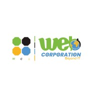

Software Engineering Intern – Web Corporation Limited
Develop, evaluate, and test features for enterprise platforms including WebVFD, POS, bus ticketing, and tracking solutions. Present build status in technical meetings, configure POS devices, set up test environments, and support day-to-day IT operations.